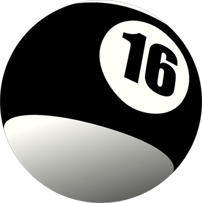

16 Ball CreationsPropuesta
Café La Esquina
Tu marca, en orden.
Después de nuestra llamada y de tu MIRA, esto es lo que proponemos. Primero ordenamos la marca para que cuente una sola historia; después construimos lo que necesita para llegar a tu gente.
ClienteAna Pérez
Proyecto o marcaCafé La Esquina
Preparado porRenne Castellanos · 16 Ball Creations
Fecha2 de octubre de 2026
Tu historia
- De dónde viene la marca y por qué nació.
- A quién le habla.
Tu identidad
- Logo, colores y estilo.
- Una voz que se reconoce.
Tus plataformas
- Página web y redes alineadas.
- Todo probado antes de entregar.
| Qué incluye | Inversión |
|---|---|
| Actualización de marca | US$ 000 |
| Página web | US$ 000 |
| Total | US$ 000 |
Todo empieza por entender tu marca; lo demás sale de ahí.
Ana Pérez
Renne Castellanos